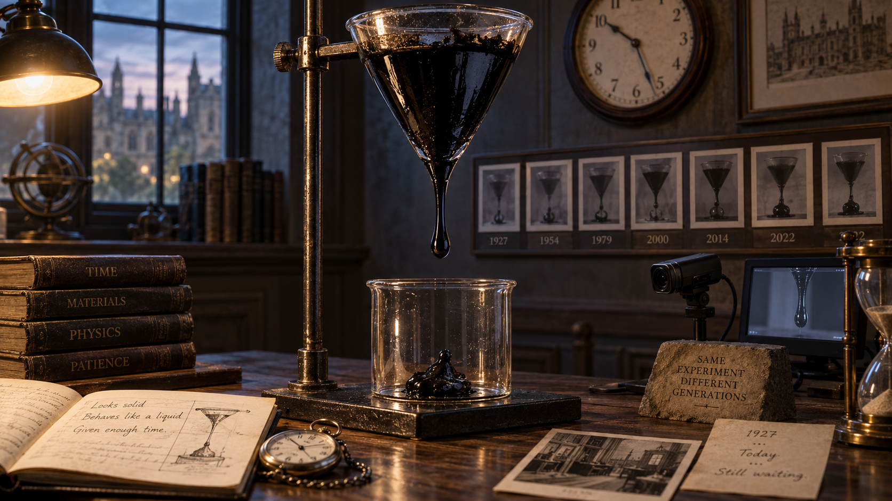

El plato del díaCiencia al límite

Ciencia al límite
La gota que nadie ha conseguido ver caer
Un experimento lleva goteando desde 1927. En casi un siglo han caído nueve gotas y ningún ser humano ha presenciado una en directo.
Nivel de cuñado:
Leer el desarrollo
Ponme otra cosa